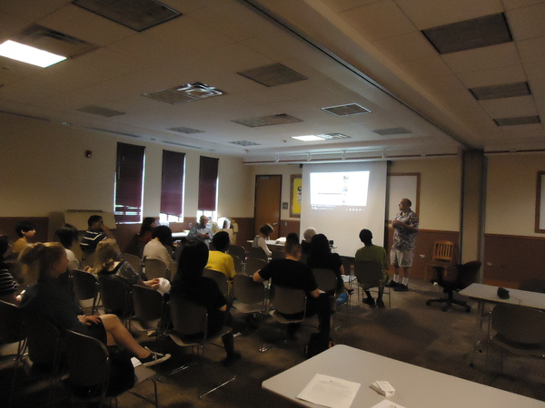

About Us
Welcome to ChicagoVeg – Chicagoland Vegetarian, Vegan, Raw Foodist Community!
ChicagoVeg is the largest Chicagoland community for vegetarians, vegans, and raw foodists to socialize and meet like-minded people. We organize a range of fun activities and outreach events in the city and the suburbs. We welcome everyone who is interested in a vegan/vegetarian/raw lifestyle for any reason - ethical, environmental, health, or spiritual. We support a nonjudgmental community where everyone can feel welcome to express their opinions, socialize, and have fun! Some of the fun activities include the following: exchanging vegan recipes, vegan potlucks, dining out at local vegetarian/vegan/raw restaurants, lectures pertaining to the vegetarian/vegan/raw lifestyle, and outreach events that promote a vegan lifestyle. We see the importance of educating others about advantages of a veg*n lifestyle, and we believe that a supportive community is vitally important to sustain a veg*n culture.
Join us for delicious meals, share your favorite recipes, discuss living a healthy lifestyle, support green/eco living, promoting veg*nism and make new friends!
Everyone is welcome, from the vegetarian/vegan/raw food-curious to the 100% vegetarian/vegan/raw foodists.
In addition to our monthly events, ChicagoVeg is also one of the lead organizers of the annual Chicago Veggie Pride Parade. The goal of the parade is "Celebrating the Healthy Vegan/Vegetarian Lifestyle!" Featuring guest speakers, a costume contest, and tons of fun, the Chicago Veggie Pride Parade (CVPP) is a wonderful all-encompassing event to support local vegans and vegetarians, as well as to raise awareness in the general public about the benefits of a plant-based diet. We encourage everyone, vegans or not vegans, to come and walk, socialize, learn, and of course celebrate the Vegan/Vegetarian lifestyle with us! For more info about this annual event please visit Chicago.VeggiePride.com
Please visit on Facebook, Twitter, YouTube, and MySpace.
ChicagoVeg is an official 501c3 non-profit organization. ChicagoVeg EIN: 46-1670886.